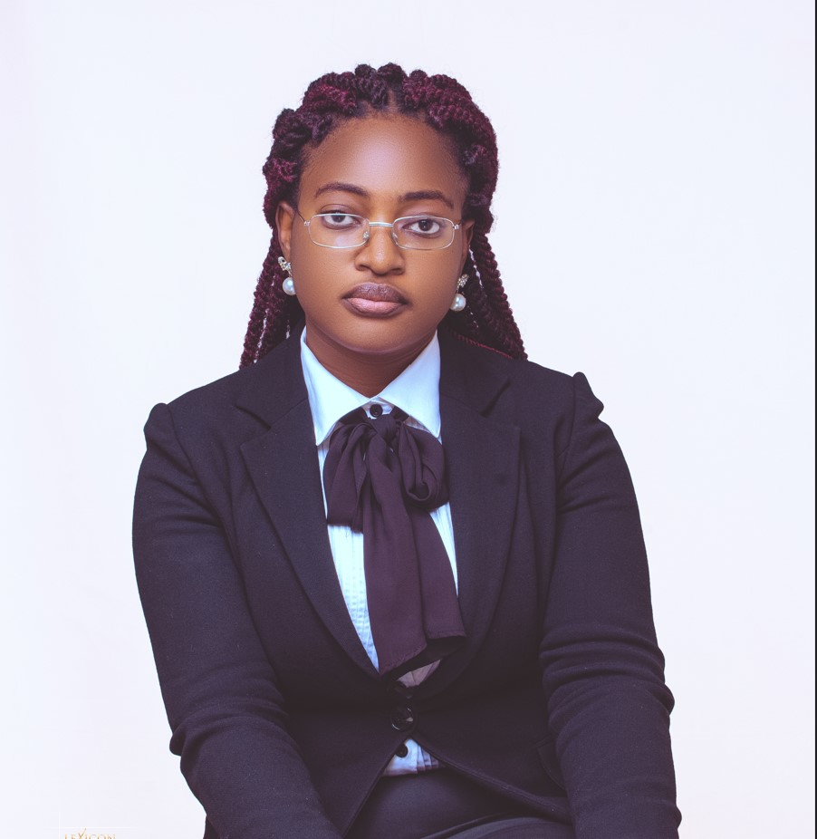

Precious Akintoye

Personal Profile Statement
I am a Web Developer as well as a Law Graduate who loves to create and manage visually appealing websites that are easy to navigate for end users.
I think there's a whole lot yet to be explored in the tech world.
I am also a creative content writer with a keen eye for detail as well as an unquenchable thirst for knowledge.
I love to work with like-minded people who can share ideas and learn from one another.
Education
- Bachelor of Laws (LL.B Hons.), Law and Legal Studies, University of Jos, Jos, Nigeria. 2016 - 2023
- Thesis: Examination of the Concept of Civilian Protection in Armed Conflicts under International Humanitarian Law: A Case Study of Russia-Ukraine War 2022. Supervisor: Dr. Chinwe Okoli CGPA 4.33/5.0
Work Experience
-
Legal Secretary, A.M Okwori & co. December 2021 – Present
- Prepare presentations ahead of corporate meetings.
- Represent the firm in secretariat capacity for Board meetings to client Companies.
- Report to my Principal after every official meeting with corporate firms.
- Ensure that minutes of Board meetings are properly documented.
- Ensure that minutes of Board Committee meetings are properly documented.
- Liaise with Directors to ensure that there is compliance with the provisions of the Companies and Allied Matters Act (CAMA).
- Write and respond to letters from corporate firms
Certification and Awards
- Secretary-General, Liberty Chamber, Faculty of Law, University of Jos, Nigeria. 2018
- Deputy Director of Legal Research, Liberty Chamber, Faculty of Law, University of Jos. 2019
- Director of Legal Research, Liberty Chamber, Faculty of Law, University of Jos. 2021
- Certificate of Caregiving Skills - Dementia Care. 2022
- Certificate of Basic Course, Mount Zion Academy. 2022
- Jesus Film Academy Project. 2022
Languages
- English: Fluent in written and oral communication.
Skills and Competency
- Proficient knowledge and skill in Web Development.
- An outstanding knowledge of Microsoft Office Packages (Microsoft Word & Microsoft Excel).
- Dexterously skilled in content writing, management, graphic design, e-mail services, and other social networks.
Others
References: Available on Request
Contact Me